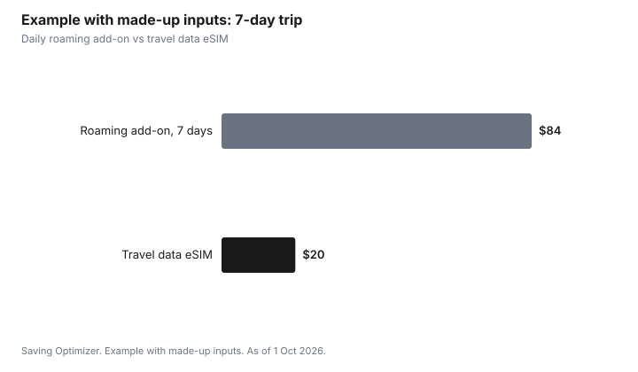

Technology · Canada
eSIMs in Canada: Switching Carriers, Travel Lines and What to Check First

An eSIM is a SIM profile you download to your phone instead of inserting a card, and in Canada it makes switching carriers and adding a travel data line faster. Before you rely on one, check that your phone supports eSIM and is unlocked, that your carrier or new provider offers eSIM activation, and how to move the eSIM if you change phones. Switching carriers by eSIM still uses normal number porting, and a travel data eSIM can cost less than a roaming add-on while your Canadian number stays on your main line.
Key takeaways
- Check: does your phone support eSIM, and is it unlocked?
- Switching carriers: the new provider activates the eSIM and ports your number.
- Changing phones: transfer or re-issue the eSIM through your carrier before wiping the old phone.
- Travel: a data-only eSIM can be cheaper than roaming; keep your main line for calls and texts if needed.
- Protect your account with a PIN or passcode to reduce SIM-swap fraud.
What to check first
| Check | Why it matters |
|---|---|
| Phone supports eSIM | Many recent phones do; some models or regions do not |
| Phone is unlocked | Needed to use another carrier; phones sold since 1 Dec 2017 are unlocked |
| Provider offers eSIM | Not every plan or brand offers eSIM activation |
| How to transfer to a new phone | Some carriers move it in the phone's settings; others re-issue a QR code |
| Account security | A PIN or passcode helps prevent unauthorized SIM changes |
Switching carriers by eSIM
Sign up with the new provider, choose eSIM, and ask to port your number. The provider sends a QR code or activation through its app. Keep your old line active until the port completes; the old carrier's service ends when the number moves. Under the Wireless Code, any remaining device balance comes due if you cancel a financing agreement.
Travel eSIMs and dual SIM
Many phones can hold two active lines, such as your Canadian plan plus a data-only travel eSIM. Compare the travel eSIM's price per gigabyte with your carrier's roaming add-on and how long the data lasts. Turn off data roaming on your main line so it does not charge you. Calls and texts to your Canadian number can still reach you on the main line if you leave it on, which may trigger roaming charges; check your plan.
Step by step: activating an eSIM
- Connect to Wi-Fi. Most eSIM activations download a profile and need a connection.
- Get the activation from the provider: a QR code, an app, or a carrier option built into the phone's settings.
- On iPhone, go to Settings, then Cellular (or Mobile Service), then Add eSIM. On Android, look in Settings under Network or Connections for SIM manager or Add eSIM. Menu names vary by model.
- Label the line (for example Main or Travel) and choose which line handles calls, texts and data.
- Restart the phone and test a call, a text and data.
- Keep the QR code private. Anyone with an unused activation code may be able to use it.
Physical SIM vs eSIM
| Factor | Physical SIM | eSIM |
|---|---|---|
| Getting started | Mail or pick up a card | Download in minutes |
| Moving to a new phone | Move the card | Transfer in settings or ask the carrier to re-issue |
| Lost or stolen phone | Card can be removed | Profile stays in the phone |
| Multiple lines | Usually one card slot | Several profiles stored; often two active |
| Travel | Buy a local card on arrival | Buy a data eSIM before you leave |
Using a travel eSIM well
- Install the travel eSIM before you leave while you have home Wi-Fi, but check when its validity starts: some start on installation, others on first connection abroad.
- Set the travel eSIM as the data line and turn off data roaming on your Canadian line.
- Decide whether to keep your Canadian line on for calls and texts. Incoming calls and texts may be charged as roaming; check your plan.
- Wi-Fi calling, if your carrier supports it, can let you use your Canadian number over Wi-Fi; check how your plan bills it.
- Remember the Wireless Code data roaming cap: charges stop at $100 per billing cycle unless you agree to more. That protects you from surprise bills but can cut off data mid-trip.
Protecting your line from SIM-swap fraud
In a SIM-swap, a fraudster convinces a carrier to move your number to a SIM or eSIM they control, then receives your text-message codes. eSIMs do not prevent this, because the attack targets your carrier account. Set a PIN or passcode on your carrier account, use an authenticator app instead of text codes for banking and email where possible, and contact your carrier at once if your phone suddenly loses service for no reason.
Common mistakes
- Wiping or trading in an old phone before moving the eSIM, which can leave you without service until the carrier re-issues it.
- Buying a travel eSIM for a phone that is locked or does not support eSIM.
- Leaving data roaming on for the main line after installing a travel eSIM.
- Deleting an eSIM profile by accident; you may need the carrier to issue a new one.
- Sharing a screenshot of a QR code.
Example with made-up inputs: a 7-day trip
These numbers are an example with made-up inputs, not current prices.
| Option | Cost |
|---|---|
| Roaming add-on at $12 a day | $84 |
| Travel data eSIM, 5 GB | $20 |

Sources
- CRTC, The Wireless Code, as of 1 Oct 2026. Unlocked phones since 1 Dec 2017; device balance on cancellation.
- CRTC, The Wireless Code, as of 1 Oct 2026. Data roaming charges capped at $100 per billing cycle unless the account holder consents to more.
- The prices in the example table and chart are made-up inputs.
Frequently asked questions
What is an eSIM?
A SIM profile downloaded to your phone instead of a physical card. It does the same job: connecting your phone to a carrier's network.
Can I switch carriers with an eSIM in Canada?
Yes, if your phone supports eSIM, it is unlocked, and the new provider offers eSIM. The new provider activates the eSIM and ports your number.
What happens to my eSIM when I change phones?
Transfer it in the phone's settings if your carrier supports that, or ask the carrier to re-issue it. Do this before wiping the old phone.
Are travel eSIMs cheaper than roaming?
Often, but compare the price per gigabyte and validity with your carrier's roaming add-on, and turn off data roaming on your main line.
Is an eSIM more secure?
It cannot be physically stolen from the phone, but accounts can still be targeted by SIM-swap fraud. Add a PIN or passcode to your carrier account.
How do I add an eSIM on my phone?
Get a QR code or app activation from the provider, then add it in the phone's mobile or SIM settings. Menu names vary by model. Connect to Wi-Fi first.
When does a travel eSIM start counting days?
It depends on the provider. Some start when installed, others on first connection abroad. Check before installing.
Researched and drafted with AI assistance and fact-checked against official Canadian sources. How we create content.